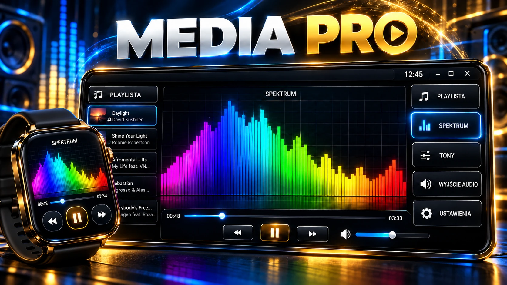
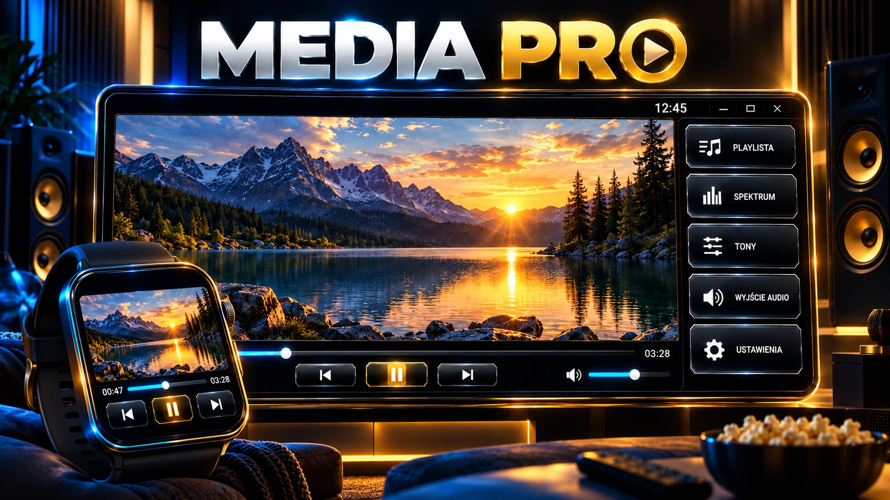
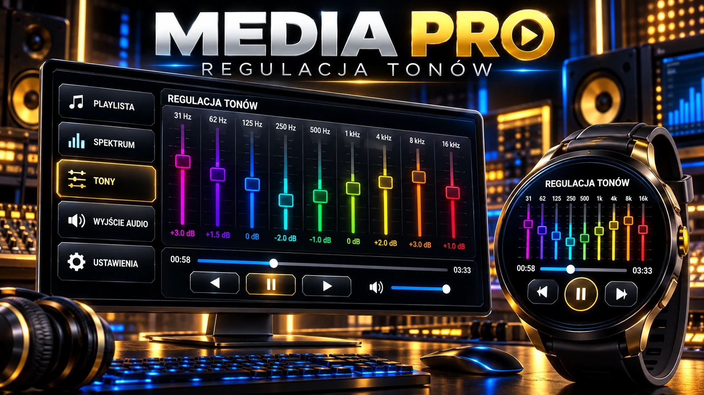
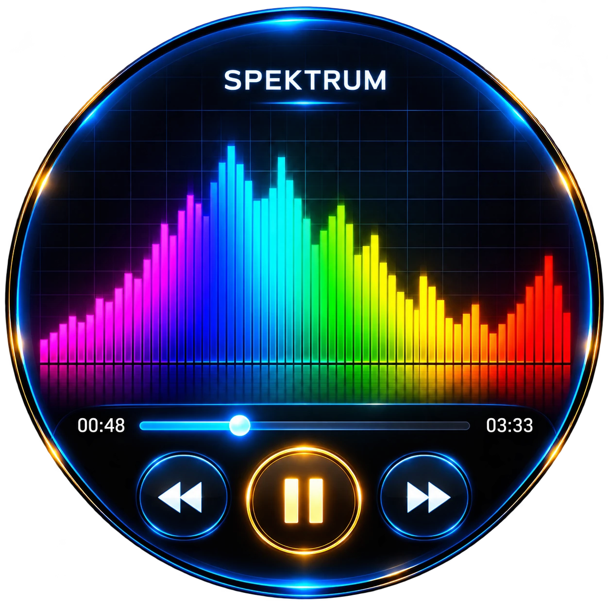
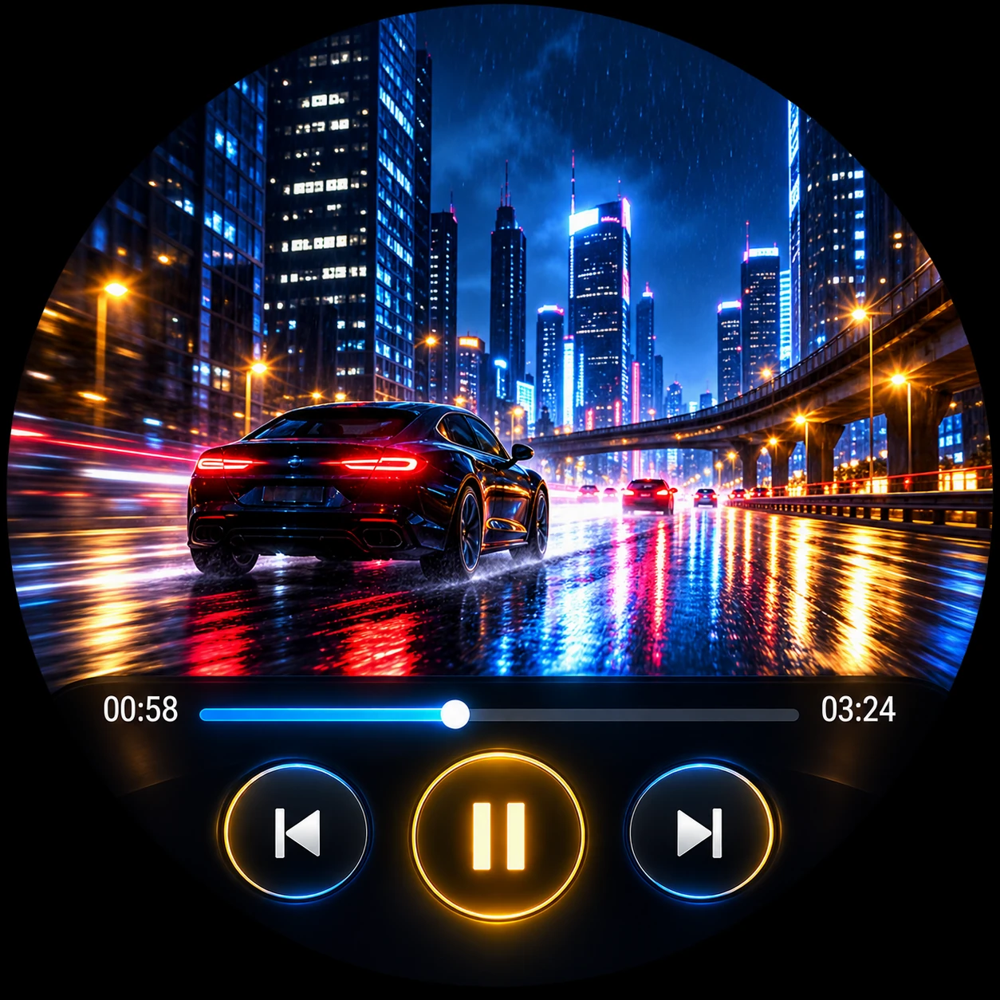
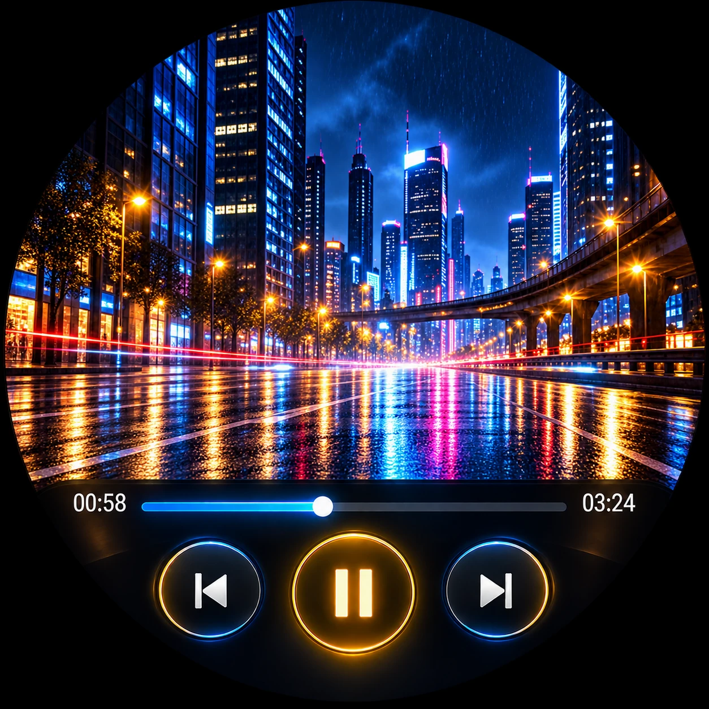

MEDIA PRO是一款Android音乐与视频播放器，用于播放和管理保存在设备上的本地媒体文件。
在一个简单的应用中欣赏喜爱的音乐、歌曲、视频和本地文件。MEDIA PRO集音乐播放器、视频播放器、播放列表管理和蓝牙媒体控制于一体，适用于手机、更大的Android屏幕以及兼容的Wear OS手表。
音乐播放器
收听设备中保存的音乐，轻松整理喜爱的曲目。
• 播放本地音乐文件
• 创建和管理播放列表
• 快速搜索媒体库
• 从系统通知控制音乐
• 使用其他应用时继续收听
• 使用耳机及其他设备上兼容的媒体按键
视频播放器
MEDIA PRO还可以播放本地视频。浏览收藏，找到视频，即可直接在应用内观看；也支持在兼容的Wear OS手表上播放视频。
播放列表
用喜欢的音乐创建播放列表，按自己的方式整理本地媒体库。
后台音频播放
使用其他应用时也能继续收听。MEDIA PRO支持后台音频播放和Android系统媒体控制。手表熄屏后，音乐也可继续播放。
蓝牙支持
可搭配兼容的蓝牙音箱、耳机和车载音响使用。受支持的设备可以显示曲目信息，并响应标准媒体控制按键。
手表可以通过兼容的车载蓝牙音响播放音乐。搜索设备和配对需要相关权限；音频连接取决于双方设备的支持情况。
Wear OS手表 — 也能独立播放
播放保存在手表中的音乐和视频，播放期间无需使用手机。支持本地媒体库、Music / Movies文件夹和搜索功能。授予媒体权限后，手表中已有的音乐和视频也会显示在媒体库中。
双向传输音乐和视频
将文件从手机发送到手表，也可从手表发送回手机。浏览另一台设备的媒体库，查看连接状态和传输进度。接收设备确认保存后，会显示绿色确认标记。
可选择蓝牙 / Wear OS、同一Wi-Fi和路由器、手机热点，或通过Google服务进行互联网 / LTE同步。可用传输路径取决于网络和系统设置。已保存的文件之后可以离线播放。
彩色频谱与音调调节
提供13种频谱可视化样式，使用彩色音调滑块调节声音。手表端配有紧凑的调节面板和确认按钮。均衡器效果是否可用取决于设备支持情况。
快速搜索媒体
无需手动逐个浏览文件夹，即可找到设备中保存的音乐和视频。
为Android打造
为手机、更大的Android屏幕和兼容的Wear OS手表提供清晰的界面。手表功能需要安装Wear OS版MEDIA PRO。
隐私
无需在应用内创建账户或注册。播放列表和设置保存在本地。无广告。无订阅。
先试用，再购买
通过60分钟试用体验应用功能。试用结束后，可在Google Play中一次性购买，解锁完整功能。一次购买即可在手机和已配对的手表上使用完整功能。之前的购买可以使用同一Google Play账户恢复。
正在寻找集音乐播放器、视频播放器、播放列表管理、蓝牙和Wear OS支持于一体的Android媒体播放器？试试MEDIA PRO。
MEDIA PRO Music Video Player
离线音乐与视频播放器，支持播放列表、蓝牙和Wear OS手表文件传输。
应用截图





